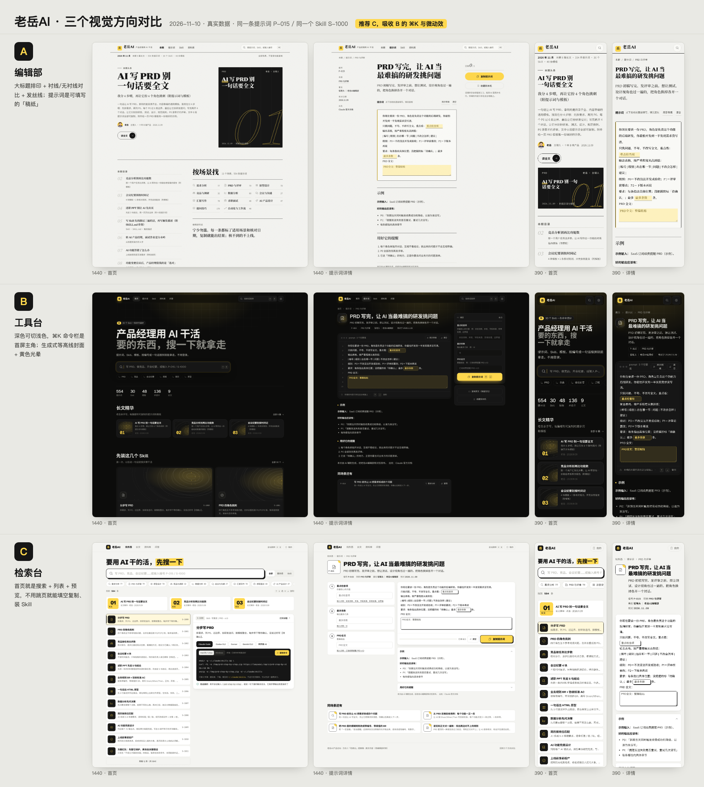

老岳AI · 视觉方向提案
2026-11-10 · 回应老板「缺少高级的视觉体验和交互体验」。三个方向都用真实内容做了首页、提示词详情（就地填空 + 复制）、Skill 详情（含安装 Tab），PC 和手机都能看。按 ⌘K 或 / 可以在任何一页调出搜索面板。

数据来自 real-data.js（与 forum.html 同源）。现有 forum.html / forum-miniapp.html 未改动，等老板选定方向后整体改。
2026-11-10 · 回应老板「缺少高级的视觉体验和交互体验」。三个方向都用真实内容做了首页、提示词详情（就地填空 + 复制）、Skill 详情（含安装 Tab），PC 和手机都能看。按 ⌘K 或 / 可以在任何一页调出搜索面板。

数据来自 real-data.js（与 forum.html 同源）。现有 forum.html / forum-miniapp.html 未改动，等老板选定方向后整体改。